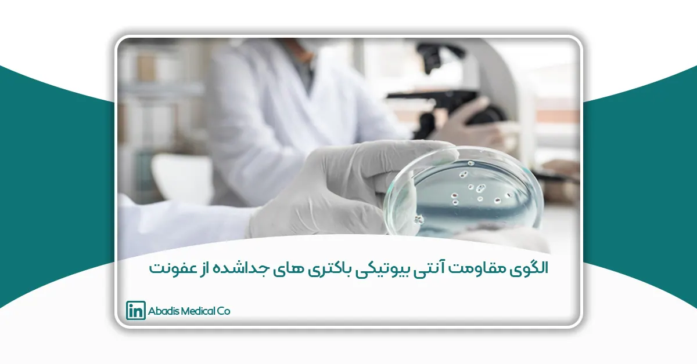
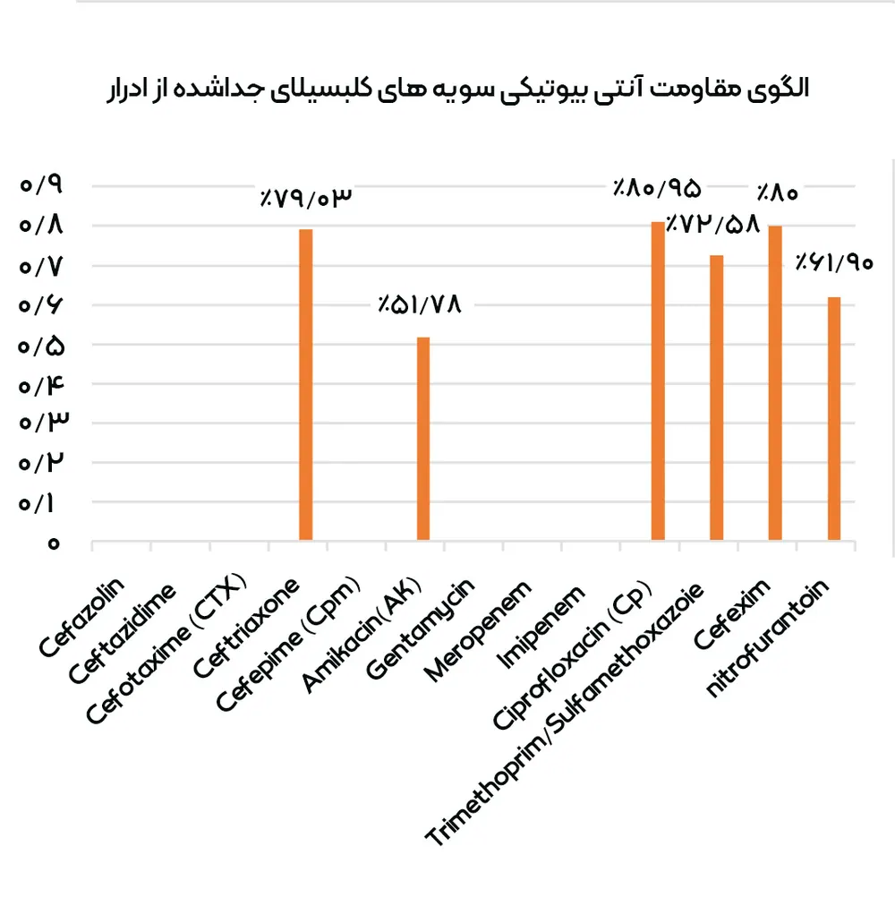
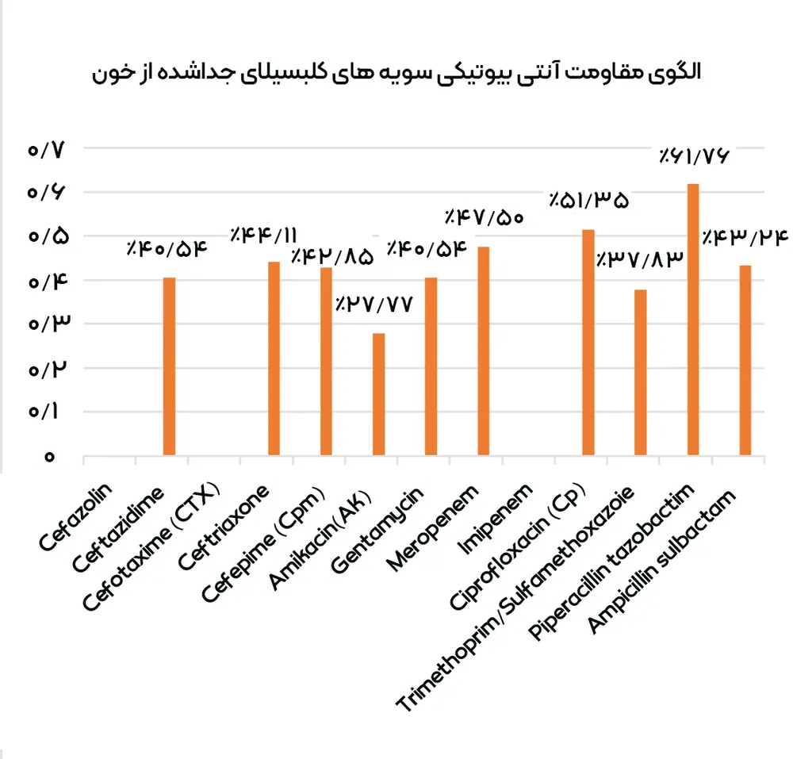
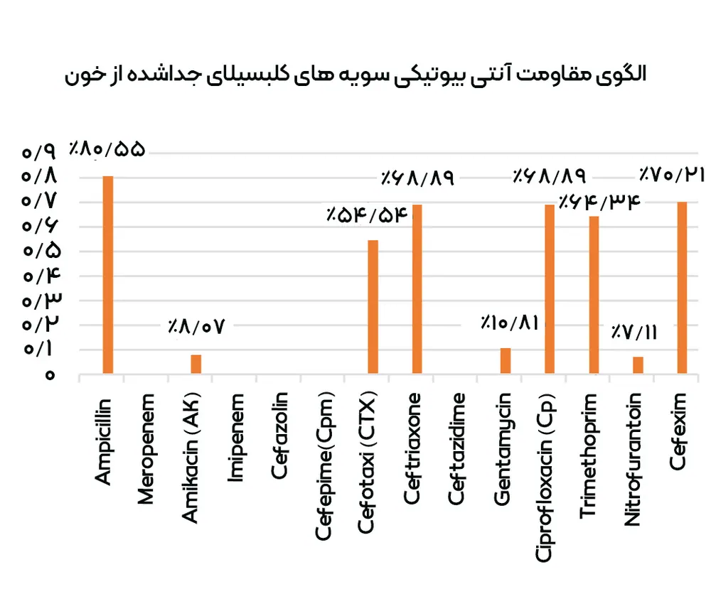

این مقاله توسط سرکارخانم دکتر ساره باقری جوشقانی، زهره سادات میرحسینی، سعیده مهماندوست، نسرین شادمهر، لیلا عباسی نوشته شده؛ و برای یازدهمین کنگره کنترل عفونت ارسال شده است.
مقدمه و هدف
امروزه با پیدایش مقاومت دارویی در میان باکتریهای بیماری زا،درمان این دسته از بیماریهای عفونی با مشکلات بسیاری مواجه شده است. به دنبال توسعهی ارگانیسمهای مقاوم به ترکیبات آنتی بیوتیکی، امروزه شاهد گزارشهای متعددی مبنی بر شیوع گستردهی آنها در بخشهای مختلف بیمارستانها هستیم که غالبا به دلیل مصرف داروهای بتالاکتام وسیع الطیف می باشد. بستری شدن طولانی مدت بیماران و استفاده از وسایلی از جمله کاتترهای ادراری و داخل عروقی از دیگر عوامل افزایش الگوی مقاومت دارویی در بیمارستان میباشد. عفونت ادراری (Infection Tract Urinary) یا UTI یکی از شایعترین عفونتهاي باکتریایی در انسان است که تخمین زده میشود سالانه 150 میلیون نفر به آن مبتلا می شوند. این عفونت دومین علت شایع مراجعه سرپایی با حدود 8/1 میلیون مراجعه به مراکز پزشکی است که بعضی اوقات نیاز به بستری دارد. معمولا UTI در زنان شایعتر از مردان است، تقریبا 50 تا% 60 از زنان حداقل یک بار در طول زندگی خود UTI را تجربه میکنند و معمولًا در 20 تا% 30 از آن ها عود عفونت رخ میدهد. شایع ترین عاملUTI ، اشرشیا کلی است، اما در عفونت های ادراری اکتسابی از بیمارستان انتروکوک ها و اسیتافیلوکوکهای کوآگولاز منفی با شیوع بیشتری همراه بودهاند. کلبسیلا پنومونیه، استرپتوکوک گروهB، پروتئوس میرابیلیس،سودوموناس ائروژینوزا، انتروباکتر کلواکه و استافیلوکوکوس اورئوس نیز به عنوان عوامل اتیولوژیک UTI شناخته شده اند.
به جایگزینی و رشد میکروارگانیسیمها در خون، همراه با علائم بالینی، عفونت خونی (BSI=Infections Bloodstream) گفته می شود،که در صورت عدم درمان با مرگ و میر بالینی همراه خواهد بود. از عوامل شایع باکتریایی ایجاد کنندهی عفونتهای خونی میتوان به اسیتافیلوكوكوس اورئوس، سودوموناس آئروژینوزا،کلبسیلا پنومونیه، اسینتوباکتر، اشریشیا کلی و انتروباکتر اشاره کرد. مقاومت آنتی بیوتیکی پدیدهای است که کم و بیش در نقاط مختلف دنیا دیده می شود، به همین خاطر درمان عفونت های مختلف از جمله عفونتهای خونی و ادراری با مشکل مواجه شده است. تحقیقات نشان داده است که عفونت خونی و ادراری ناشی از باکتری های مقاوم به آنتی بیوتیک نسبت به باکتری های حساس به آنتی بیوتیک باعث مرگ و میر بیشتر، بستری شدن طولانی مدت و هزینه های بالاتر می شود. هرکدام از سویه های باکتریایی حساسیت متفاوتی نسبت به آنتی بیوتیک های مختلف نشان میدهند و درمان عفونت های باکتریایی کاما با توانایی باکتریها در ایجاد مقاومت نسبت به عومل ضدمیکروبی در ارتباط است و انتخاب بهترین آنتی بیوتیک که باکتری مقاومت کمتری نسبت به آن دارد جهت درمان ضروری میباشد.
روش پژوهش
این مطالعه مقطعی بر روی پرونده های کشت مثبت شش ماهه اول سال 1401 در بیمار ستان شهید بهشتی کاشان صورت گرفت. برای تجزیه و تحلیل داده ها از نرم افزار SPSS استفاده شد.
نتایج و بحث
کلبسیلای جدا شده از خون به 10 آنتی بیوتیک مقاوم بوده ولی کلبسیلای جدا شده از ادرار به 5 آنتی بیوتیک مقاومت نشان دادند. اما میزان در صد مقاومت به آنتی بیوتیک های مشابه در سویه های کلبسیلا جدا شده از ادرار نسبت به خون بالاتر است. درصد مقاومت به آنتی بیوتیکها در انتروکوکها و اشرشیا کلیهای جدا شده از ادرار نسبت به خون بالاتر است .سدوموناسهای جدا شده از خون نسبت به 7 آنتی بیوتیک مقاومت دارند ولی سدوموناس های جدا شده از ادرار نسبت به 5 آنتی بیوتیک مقاومت دارند ولی درصد مقاومت درآنتی بیوتیک های مشابه در سدوموناس های جدا شده از ادرار بالاتر است.
جدول



نتیجه گیری
نتایج این پژوهش پیشنهاد میكند كه مقاومت ضد میكروبی بالا بوده و این امر درمان بیماریهای عفونی را با مشكل مواجه میسازد. لذا با نظارت بر مصرف مواد ضد میكروبی در درمان عفونتهایی كه واجد مقاومت های چند دارویی میباشند و در صورت امكان تعیین فنوتیپ و ژنوتیپ سویه های مقاوم میتوان تاحدودی از توسعه مقاومت در باكتریها جلوگیری به عمل آورد. همچنین با توجه به شیوع بالای ایزولههای مقاوم به چند دارو، ضرورت انجام آنتی بیوگرام قبل از تجویز آنتی بیوتیک و مصرف درست آنتی بیوتیکها در مورد عفونتهای ناشی از باکتریها باید بهطور جدی مورد توجه قرار گیرد. همچنین با تجویز مناسب آنتی بیوتیک، منطبق با نتایج دقیق آنتی بیوگرام و به همراه رعایت اصول بهداشتی در بخشهای مختلف بیمارستان، میتوان نسبت به درمان صحیح بیماران و کاهش هزینه های درمانی اقدام نمود.